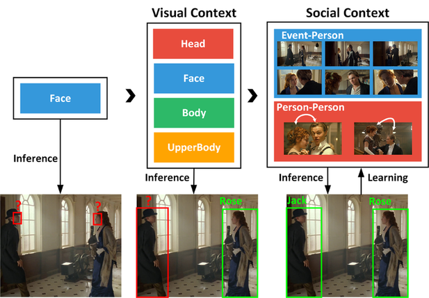
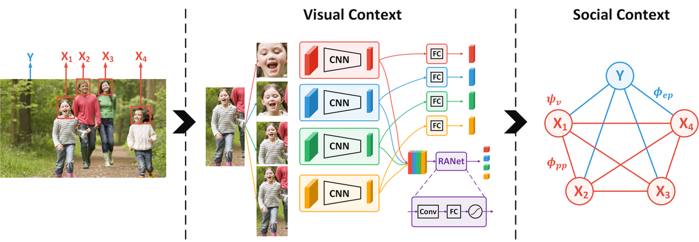
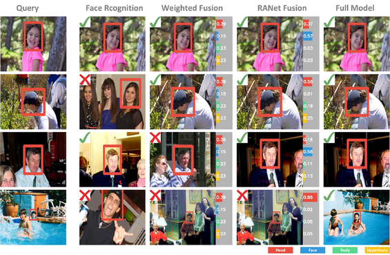
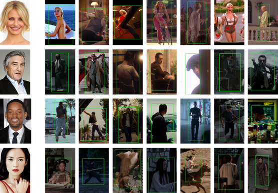

Abstract
Despite the great success of face recognition techniques,
recognizing persons under unconstrained settings remains
challenging. Issues like profile views, unfavorable lighting,
and occlusions can cause substantial difficulties.
Previous works have attempted to tackle this problem by exploiting the context,
e.g. clothes and social relations.
While showing promising improvement, they are usually limited in two
important aspects,
relying on simple heuristics to combine different cues
and separating the construction of context from people identities.
In this work, we aim to move beyond such limitations and
propose a new framework to leverage context for person recognition.
In particular, we propose a Region Attention Network, which is learned
to adaptively combine visual cues with instance-dependent
weights.
We also develop a unified formulation, where the social contexts
are learned along with the reasoning of people identities.
These models substantially improve the robustness
when working with the complex contextual relations in
unconstrained environments.
On two large datasets, PIPA and Cast In Movies (CIM),
a new dataset proposed in this work, our method consistently
achieves state-of-the-art performance under multiple evaluation policies.
Framework

Results
Accuracy on CSM
| Dataset |
Split |
Existing Methods on PIPA |
Ours |
| PIPER |
Naeil |
RNN |
MLC |
Baseline |
+RANet |
+RANet+P |
Full Model |
| PIPA |
Original |
83.05 |
86.78 |
84.93 |
88.20 |
82.79 |
87.33 |
88.06 |
89.73 |
| Album |
- |
78.72 |
78.25 |
83.02 |
75.24 |
82.59 |
83.21 |
85.33 |
| Time |
- |
69.29 |
66.43 |
77.04 |
66.55 |
76.52 |
77.64 |
80.42 |
| Day |
- |
46.61 |
43.73 |
59.77 |
47.09 |
65.49 |
65.91 |
67.16 |
| CIM |
- |
- |
- |
- |
- |
68.12 |
71.93 |
72.56 |
74.40 |
Examples of Recognition Results

CIM Dataset
Cast In Movies (CIM) contains more than
150K instances of
1,218 cast from 192 movies.
Bounding box and indentity of each instance are manually annotated.
Accuracy on CSM
Comparison between
PIPA and CIM
| Dataset |
Images |
Identities |
Instacens |
Distractors |
Instances/Identities |
| PIPA |
37,107 |
2,356 |
63,188 |
11,437 |
26.82 |
| CIM |
72,875 |
1,218 |
150,522 |
72,924 |
63.70 |
Examples of CIM

Citation
@inproceedings{huang2018unifying,
title={Unifying Identification and Context Learning for Person Recognition},
author={Huang, Qingqiu and Xiong, Yu and Lin, Dahua},
booktitle={Proceedings of the IEEE Conference on Computer Vision and Pattern Recognition},
pages={2217--2225},
year={2018}
}